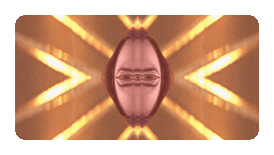

::Begin
C-quential Mapping Ord][u]re :: [a child's phraseing ///dubble looping cut o filmbyte //parental
parenthesis revoked] [a couple coupling //resultant
genesis be][4][go][ne
conclusion][tton]
::begin/ __ /removal::
[sound of a child's keening] //techtronically altered //back seat d][evolution][reamin //mutha moolah milking //blackest of marketry required //grandmutha resplendent in her c][ryogenic][rust //selling
the child's face -- ::[Settings]:: [dials can b adjusted accordingly] . Con-see-quence Adapter=10 .. ][e][Motion Mappa Quotient=10 . . Psych..o..sexual Adaption Lever=-134 . . Pe.riff.eral Filt][er][ration Nullifah=10 . . Sub][tle][ HeadTilt Comprehender=8 . . Tor][ture][quic Data.se][a][t=10 . . Mandible Cor][ pulmonale][d=5 . . Sci-fionic Regenderer=10 . . Static S][tr][eam Ceaser=10 . . Silliconicial=10 . . Actu][idiot sav][ant Kinetique=100][2 the power of [] ][ . |